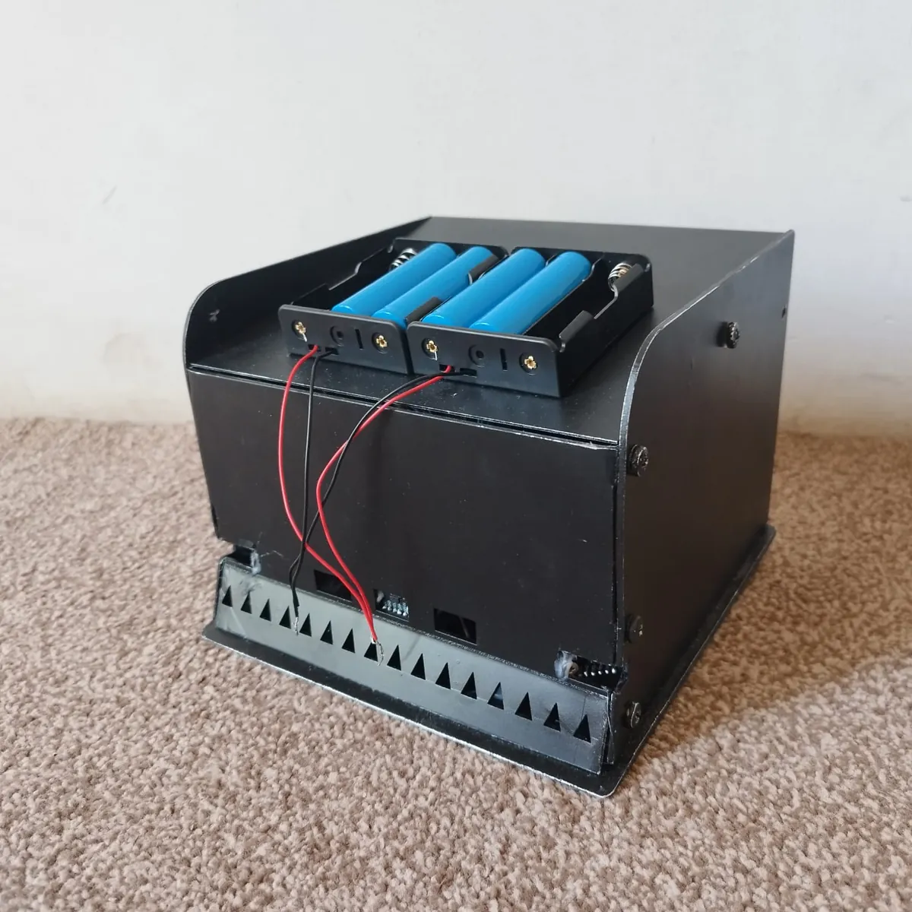
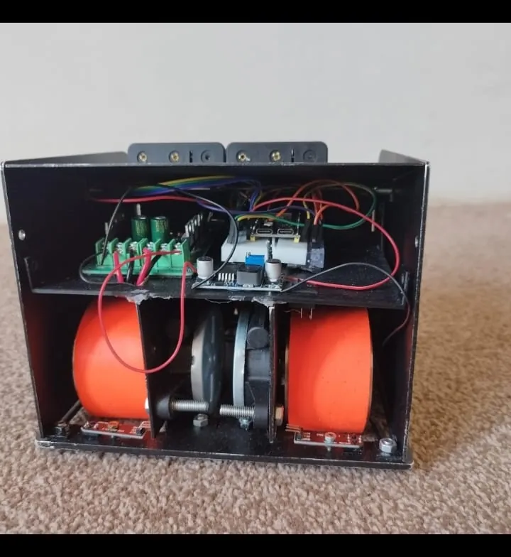
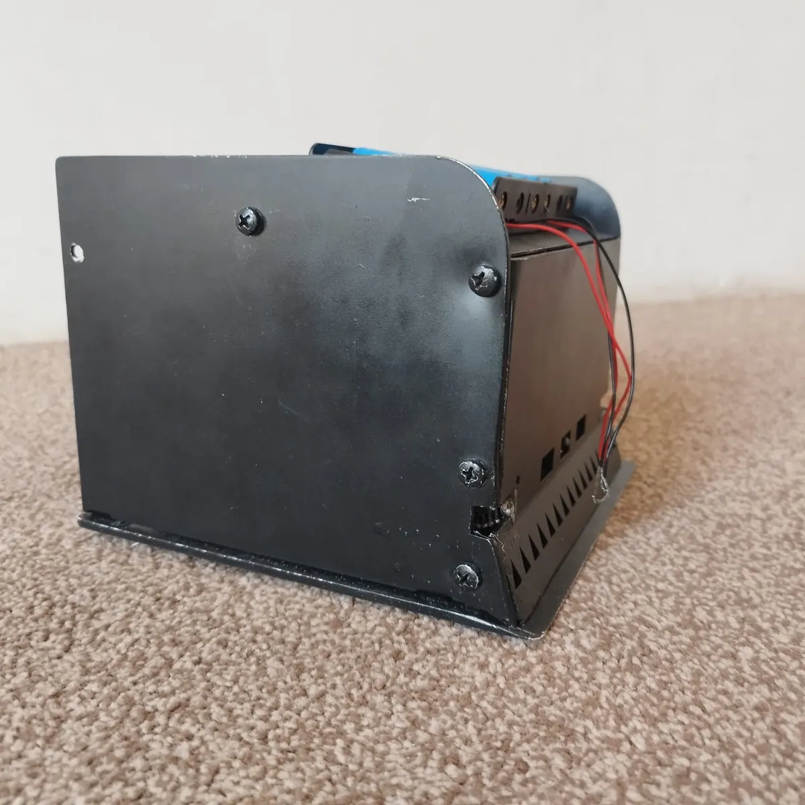

Autonomous sumo robot
HTU Sumo Robot Contest, 2024
A fully autonomous sumo robot on an ESP32: it finds the opponent with its sensors and drives it out of the ring, with no remote control. I built the chassis, the wiring and the detection and motion logic, and competed with it live at Al-Hussein Technical University.
To train the behaviour before testing on hardware, I rebuilt the robot and the ring in Unity and trained an agent with ML-Agents (PPO, about one million steps). Ray sensors are its only view of the world. It earns reward for pushing the box over the edge and is penalised for leaving the ring itself.
- ESP32
- C++
- Unity
- ML-Agents
- PPO
- Fusion 360


